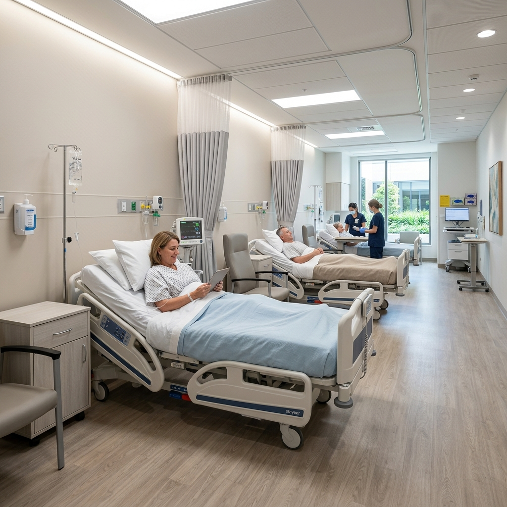

Day care surgery and nursing care in Ullal, Bengaluru. Minor procedures, IV therapy and post-operative recovery by Dr. Harish Kumar Jain. Call 063608 55615.

At Hermes Health Care in Ullal, Bengaluru, we are dedicated to providing world-class Day Care & Surgery services. Our clinic serves as a primary healthcare anchor for residents of Ullal, Jnana Ganga Nagar, Rajarajeshwari Nagar, Nagarbhavi, Kengeri, and surrounding areas. Our patient-first philosophy guides our team of experienced doctors and medical specialists to deliver evidence-based, compassionate care in a state-of-the-art facility.
Our clinical approach combines advanced diagnostics with specialized consultation to manage acute illnesses, track chronic conditions, and promote preventative wellness. We believe that health management should be comprehensive, accessible, and customized to each individual's unique physiological needs. Whether you require a routine health screening, minor surgical interventions, advanced physiotherapy programs, or specialist consultations for complex systemic illnesses, our multidisciplinary team coordinates closely to support your path to recovery.
Hermes Health Care represents a modern day care and multi-speciality model. This means that we perform diagnostics, consultations, minor surgeries, and active rehabilitation all under one roof, saving patients from the stress of navigating large corporate hospitals for primary and secondary care. We run daily clinics from 9:00 AM to 9:30 PM, ensuring that healthcare is accessible even during late evenings for working professionals and families.
If you or your family members are experiencing any of the following symptoms, scheduling a medical consultation at Hermes Health Care in Ullal is the first step toward diagnosis and relief. Ignoring early warning signs can lead to complications and chronic health challenges.
Painful, warm, fluid-filled lumps under the skin requiring clinical surgical drainage under local anesthesia.
Painful nail growth or abnormal skin growths that require minor outpatient excision to prevent infection.
Wounds that need clinical dressing, suture removals, or minor surgical debridement and hygiene care.
Extreme weakness due to fluid loss, requiring clinical IV fluid resuscitation and daycare nursing.
Mild abdominal bulges that need clinical surgical consultation and planned outpatient minor repair.
Severe pain that requires physician-administered intramuscular or intravenous pain relief therapy.
At Hermes Health Care, our clinical infrastructure is fully equipped to diagnose, manage, and treat a wide spectrum of health conditions. Our focus is on restoring health through evidence-based protocols and individualized medical attention.
Accurate treatment depends entirely on precise diagnostics. At Hermes Health Care in Ullal, Bengaluru, we employ a meticulous diagnostic approach. Our in-house clinical laboratory operates under strict calibration standards, utilizing modern diagnostic equipment to deliver highly reliable results.
During your consultation, our doctors perform detailed physical examinations and take a comprehensive history of your symptoms. Based on their initial findings, they may recommend targeted diagnostics, which can include pathology blood profiling, biochemistry panels, digital ECG, Holter monitoring, or low-dose digital X-rays. Having these services available in-clinic ensures that we can quickly correlate laboratory data with your clinical presentation to make safe, fast, and effective treatment decisions.
We prioritize patient comfort and safety during all diagnostic procedures. Our lab technicians are highly trained in pediatric and geriatric phlebotomy, ensuring blood collection is as painless and stress-free as possible. For patients with mobility limitations, we coordinate home sample collection services across Ullal and nearby neighborhoods, bringing our certified laboratory standards directly to your doorstep.
Do you need to schedule a diagnostic test or health package? We offer fast reporting.
We design personalized treatment regimens tailored to the severity of your condition, age, lifestyle, and overall wellness goals. Our clinical team believes in evidence-based pathways, utilizing conservative and medical therapies as a primary line of treatment, reserving surgical interventions for cases where structural corrections are absolutely necessary.
Our treatment options span advanced pharmacological management, specialized daycare therapies, structured physical rehabilitation, and minor outpatient surgical procedures. By combining the skills of our general physicians, orthopaedic surgeons, diabetologists, gynecologists, and physiotherapists, we provide comprehensive, cross-specialty recovery plans. This is particularly beneficial for senior patients managing multiple conditions, such as arthritis, diabetes, and hypertension, who require carefully coordinated medical supervision.
Education is a core pillar of our treatment philosophy. We spend time helping patients understand their diagnoses, the therapeutic mechanism of their prescribed medications, and the importance of active lifestyle modifications. Our team provides detailed guidance on clinical nutrition, therapeutic exercises, and stress management, empowering you to maintain long-term recovery and prevent future health complications.
Choosing Hermes Health Care for your medical needs provides numerous clinical and patient-centered benefits:
To help you understand why Hermes Health Care is preferred by residents in Ullal, Bengaluru, we have compiled a comparison table outlining key differences between our patient-first facilities and typical local clinics:
| Clinical Metric | Hermes Day Care Centre | Large Corporate Hospitals |
|---|---|---|
| Admission Process | Direct, zero-wait outpatient daycare admission | Complex billing and insurance delays |
| Same-Day Discharge | Standard discharge within 1-2 hours of procedure | Frequent overnight observations / higher bills |
| Out-of-Pocket Expenses | Highly cost-effective, transparent pricing | High infrastructure charges & room rents |
| Nursing Ratio | Dedicated 1-on-1 bedside nursing care | High nurse-to-patient ward ratios |
Highly qualified and certified specialists delivering evidence-based patient-first solutions.
Specialist in General Surgery. Expert in minor outpatient surgical operations, abscess drainage, cyst removals, wound debridement, and post-operative care.
We maintain the highest clinical standards to ensure accurate diagnosis, comfortable procedures, and successful recovery outcomes.
Consult with registered and certified doctors holding post-graduate medical qualifications and years of tertiary hospital experience.
Receive scientifically validated, peer-reviewed therapy plans designed around the latest international medical guidelines.
We prioritize your questions, values, and comfort, ensuring you never feel rushed during physical examinations or consultations.
We deliver outpatient consultations, diagnostics, and daycare procedures to residents in nearby neighborhoods:
Have questions about our Day Care & Surgery services? Browse answers to common patient inquiries:
A day care hospital or outpatient surgical centre allows patients to undergo minor surgeries, receive clinical infusions, or undergo diagnostic procedures under medical supervision and return home the same day without overnight stay.
Day care surgeries include minor excisions of skin lumps (lipomas, sebaceous cysts), ingrown toenail removals, abscess incision and drainage, clinical wound debridement, and suture repairs.
For most minor surgeries performed under local anesthesia, patients are monitored in our day care ward for 1 to 2 hours before being safely discharged with home-care guidelines.
Yes, day care surgeries are highly safe. They are performed by qualified surgeons under sterile local anesthesia conditions, with patient monitoring, resulting in very low infection risks.
Hermes Health Care offers minor surgical procedures at a fraction of the cost of large corporate hospitals. Please contact our front desk for exact procedure pricing.
Yes, our day care ward and minor procedure room operate on Sundays from 9:00 AM to 9:30 PM, providing accessibility for emergency wound care or minor interventions.
For minor daycare hernia surgeries, patients can resume light physical movement in 3 to 5 days, while heavy physical activities or heavy lifting should be avoided for 4 to 6 weeks.
Yes, we provide dedicated day beds for patients requiring intravenous antibiotic therapy, rehydration fluids, or clinical injections under the supervision of qualified nurses.
You only need to bring your clinical records, prescription list, and a loose-fitting, comfortable set of clothes. Avoid wearing jewelry or metal objects.
Yes, all procedures performed in our daycare unit are outpatient services, meaning you will be discharged to recover in the comfort of your home on the same day.
You can book a consultation with our General Surgeon Dr. Harish Kumar Jain by calling 063608 55615, or messaging us on WhatsApp to schedule your evaluation.
It involves cleaning, disinfecting, and applying sterile dressings to chronic wounds (like diabetic foot ulcers) or post-surgical incisions under aseptic conditions to promote tissue healing and prevent bacterial infection.
Yes, our daycare unit is continuously staffed by registered clinical nurses who monitor vitals, administer intravenous medications, and assist patients throughout their stay.
We perform skin cyst excisions, lipoma removals, ingrown toenail treatments, abscess drainage, ear lobule repairs, wound suturing, and suture removals.
Most day care procedures are performed under local or regional anesthesia. General anesthesia is not administered in-clinic; cases requiring it are coordinated at allied hospitals.
Take control of your health. Consult our experienced medical specialists in Ullal, Bengaluru for expert diagnostic and recovery pathways.